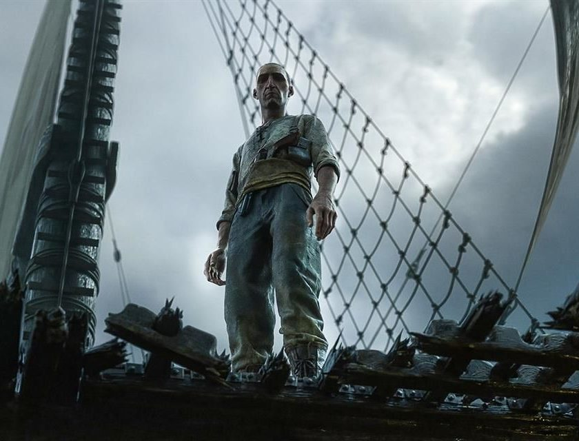

Love, Death & Robots VOL 3: una nueva joya de la animación para adultos
Love, Death & Robots estrena una nueva colección de historias
por Cristian Pestana

Después de dos temporadas exitosas, Love, Death & Robots regresa con una entrega de historias llenas de sangre, diversión y reflexiones profundas sobre el ser humano. En esta ocasión, cuenta con nueve episodios de gran calidad visual y ya está disponible en la plataforma de Netflix.
Sinopsis de la temporada 3 de Love, Death & Robots
Una tripulación de marineros se enfrenta a una criatura monstruosa de las profundidades, los miembros de un escuadrón de fuerzas especiales encuentran a un demonio ancestral en las montañas de Afganistán, asistimos a la relación tóxica de una sirena con un caballero sordo que se resiste a caer en su trampa mortal… Estas son algunas de las historias que componen el volumen 3 de Love, Death & Robots.
Crítica de Love, Death & Robots VOL 3
En los últimos años, la plataforma de Netflix ha decidido apostar por una máxima clara: cantidad por encima de la calidad. Esto ha dado lugar a productos decepcionantes, que luego de un vistazo, se olvidan con facilidad. Pero, de vez en cuando, hay alguna pequeña joya escondida en el catálogo, con la que podemos maravillarnos. Es el caso de producciones como The Crown, Gambito de Dama o la serie que nos ocupa.
Animación sobresaliente
Una de las principales señas de identidad de Love, Death & Robots es su animación. Cada episodio cuenta con un estilo de animación distinto, que les aporta personalidad propia y muestra la creatividad ilimitada de la cual se puede disponer para lograr grandes avances en la técnica. De esta manera, encontramos historias con animación 2D tradicional hasta el 3D más alucinante.
En particular, destacan dos episodios de esta entrega: Jíbaro, con una animación fotorrealista que pone los pelos de punta al presentarnos escenarios como bosques y cascadas, y personajes con un nivel milimétrico de atención al detalle.
El otro es Mal Viaje, para muchos el mejor cortometraje de esta temporada, dirigido por el aclamado David Fincher. Esta historia, creada a través de captura de movimiento nos adentra de lleno en un barco mercante, donde cada miembro de la tripulación posee un aspecto distintivo y la escalofriante criatura que convive con ellos, de aspecto lovecraftiano es una creación imponente que eleva el conjunto de un episodio brillante.
Variedad argumental
El apartado técnico de Love, Death & Robots es sublime, pero además, están acompañados de narrativas interesantes que afortunadamente presentan más éxitos que fallos. Tenemos la asombrosa aventura espacial de El mismo pulso de la máquina que se desarrolla como un viaje alucinógeno con reflexiones filosóficas incluidas. La inteligente exploración de las relaciones tóxicas en Jíbaro plasmada a través de una suerte de danza mortal y revisionismo de la mitología que rodea a las sirenas es una experiencia fascinante y perturbadora al mismo tiempo, mientras que el espléndido Mal Viaje le da una vuelta de tuerca a los relatos de aventuras tradicionales.
Por otra parte, el humor negro y el terror se dan de la mano en Equipo Mortal y En Salas abovedadas sepultadas, ambas con un espíritu desternillante de serie B y La noche de los minimuertos ofrece diversión y creatividad en una presentación compacta.
En el lado negativo, tenemos el decepcionante regreso de los adorables y sarcásticos robots de la primera temporada en Tres Robots: Estrategias de salida donde nos presentan una dosis de crítica social con brocha gruesa y de manera banal. Lo mismo pasa con Las Ratas de Mason y su mensaje antiguerra de gran importancia para los tiempos que vivimos se pierde debido a un tono errático y ejecución rocambolesca de su metáfora.
El terror científico de El Enjambre tiene un desarrollo interesante, pero su final es insípido y carente de la intensidad requerida para ser efectivo.
En conclusión…
Love, Death & Robots entrega una nueva colección de historias que asombran por su variedad y la excepcional animación que se ha vuelto marca de la casa. Una joya audiovisual que no decepciona y sigue demostrando por qué es una de las mejores producciones que pueden encontrar en Netflix.
Puedes ver Love, Death & Robots en Netflix.

Cristian Pestana
Soy venezolano, tengo 24 años. Licenciado en Comunicación
Social, mención Guionismo y Producción Audiovisual. Aficionado
del cine y la literatura.